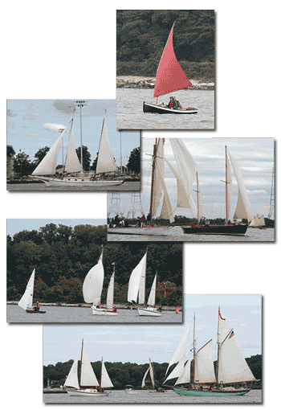

Below you will find the announcement for the 3rd
Annual Classic Wooden Bot Rendezvous & Regatta.
This event is hosted by the National Sailing Center & Hall of Fame in
conjunction with the Chesapeake Traditional Sailing Association. We would like
to invite those Penguin and Beetle Cat owners whose boats are wooden to
participate in this wonderful event. To that end I would like to ask if you
could forward this information to those who may be interested. They can link to
our web site, www.nshof.org where all of the information
for sign up is available.
We thank you for any help you can provide in passing this
information along.
Maria C Museler
National Sailing Center & Hall of Fame
69 Prince George St.
Annapolis, MD 21402
410.295.3022/410.952.3174
www.nshof.org

Now Accepting Entrant Registrations for theNational
Sailing Center & Hall of Fame
3rd Annual
Classic Wooden Boat
Rendezvous & Regatta
September
22 - 24, 2012
Annapolis,
MD
Wooden boat owners - get that brightwork shining! Here's your chance to showcase your
pride and joy alongside other classic yachts in the heart of America's Sailing
Capital.
The 3rd Annual Classic Wooden Boat
Rendezvous & Regatta is a fun and casual gathering of classic wooden
sailboats to showcase their history and elegance and provide an informal oportunity to compete in a low-key race against similar
vessels.
Any boat under 60 feet in length,
whose hull is built from wood and whose design dates back before 1970 may
participate including newer wooden boats built to pre-1970 designs.
For more information and to
register, click here to visit the Classic Wooden Boat "R&R"
page on the NSHOF Website.
Or go to http://bit.ly/nshof-classicwoodenboatregatta.
April 16, 2012
Forward this email to a Sailing
Friend,
or use our Tell a Friend Page
to forward to up to 20 friends.
|
|
The
National Sailing Center & Hall of Fame |